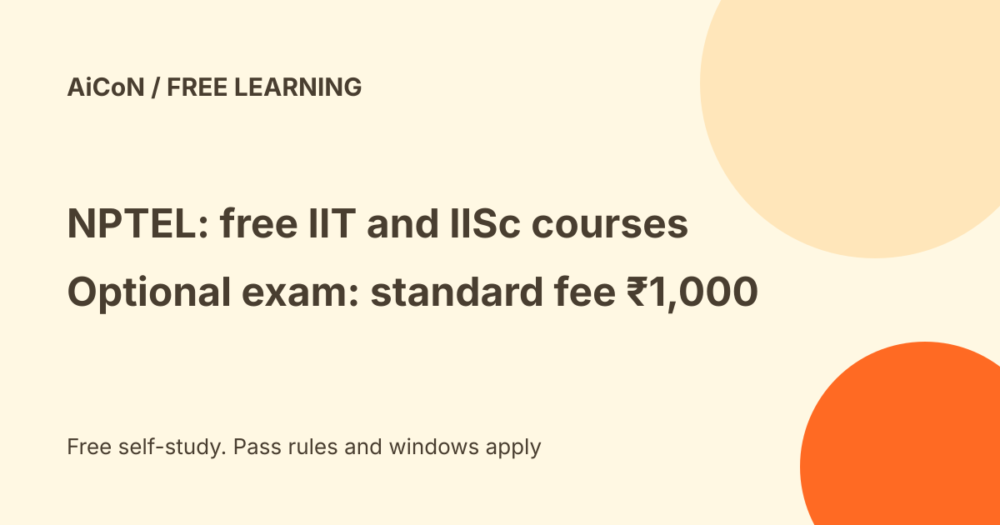

NPTEL: free IIT and IISc learning, with an optional certificate exam
NPTEL is the online learning programme of the IITs and IISc, funded by the Ministry of Education. Its site says more than 3,200 courses are available for self study. Joining a course, watching the lectures, doing the assignments and using the forum are free. The optional certification exam has a standard ₹1,000 per-course fee. Paying does not guarantee a certificate: assignment and exam pass criteria still apply.

Current enrollment status
As checked on 11 October 2026, the official July-December 2026 guidelines say enrollment has closed. The listed standard exam-registration and cancellation windows ended in August. The page still contains some older "open now" wording, so do not rely on that banner. Self-study materials remain available; check the current semester page and your exact course announcement for the next offering or any explicitly permitted exception. This is not a claim that a new learner can register for the October exams now.
What is on offer?
NPTEL courses from IITs, IISc and other reputed institutes cover engineering, science, humanities and management. The certification courses (called NOC, NPTEL Online Certification) run for 4, 8 or 12 weeks and are offered twice a year. The site also lists GATE preparation, internships and other initiatives under its menus.
What is free and what costs money?
| Free | Joining a course, video lectures and study material (downloadable), weekly assignments and the discussion forum. |
|---|---|
| Paid, optional | Standard ₹1,000 per course for the exam, with certification only after meeting pass rules. The current official fee examples list ₹500 for SC/ST or PwD and ₹250 for combined SC/ST and PwD, subject to valid documents. A faculty FDP certificate adds ₹100 where selected. Check your exact registration total and travel cost; this is not a blanket ₹1,000 all-in promise. |
| Refund | NPTEL's NOC FAQ says you can cancel the exam registration before the deadlines on its timeline sheet and get a refund in 2 to 3 weeks. Current semester guidelines say initiation for cancelled courses is only after two weeks. After the deadline there is no cancellation/refund. The current form also uses broad non-refundable wording, so confirm the exact applicable policy before a future payment, and do not assume a missed exam earns a refund. |
How to get started
- Open NPTEL courses for self-study, or follow the official SWAYAM NPTEL course page when a certification offering is open. Use the same email for enrollment and exam registration.
- Pick a course and check its enrollment status, start date and duration. Join only when the current course permits enrollment; otherwise use available self-study content or wait for the next run.
- Watch lectures and submit the weekly assignments.
- If you want certification, decide before that course's exam-registration deadline. Complete the official form, document uploads and payment within the window; keep your receipt and later download the hall ticket.
How the certificate works
You need to enrol, do the assignments, register and pay for the exam, write the proctored exam at a centre and meet the pass criteria. Medical courses and some programming courses use different criteria, which the course page states. Typical weighting is 25% assignments and 75% exam; a combined 40 alone is not enough if either separate threshold fails. This is not an IIT/IISc degree or a job guarantee. Check the hall ticket, allotted city/session and required ID; NPTEL can change allotments and candidates cover travel.
Registration data and privacy
The exam guidelines require a photo and signature, and valid category/disability proof where applicable. They say the data-sharing policy is part of exam terms, and topper details/testimonials may be used on the portal or in publicity. Read that policy and the exact form before submitting personal data; we did not inspect an account or establish a retention/deletion promise. Wrong or missing required photos/documents can cancel registration without refund. Changes after the permitted data-change date may cost ₹200 per field, where accepted.
A careful checklist
- Check the course dates and the exam registration deadline on its page.
- Do not pay anyone other than the official NPTEL portal for exam registration.
- Keep an email you check, since the exam registration link and notices go there.
- Take the course for the learning even if you skip the certificate.
We did not enrol or take an exam. We read the NPTEL home page, FAQ and NOC FAQ on 11 October 2026. The NOC FAQ page is on NPTEL's archive site and may lag the main site, so confirm the fee on the course page before paying. The current official July-December 2026 guidelines were also checked, including their fee examples, document requirements and closed enrollment windows.
Frequently asked questions
Do I need to be a student?
NPTEL's about page says anyone outside the IIT system can take a course and earn a certificate from the IITs.
Sources: NPTEL home, NPTEL FAQ, NOC FAQ, current semester timelines and guidelines, semester page. Checked 11 October 2026. This is an AiCoN explainer, not an official NPTEL page.